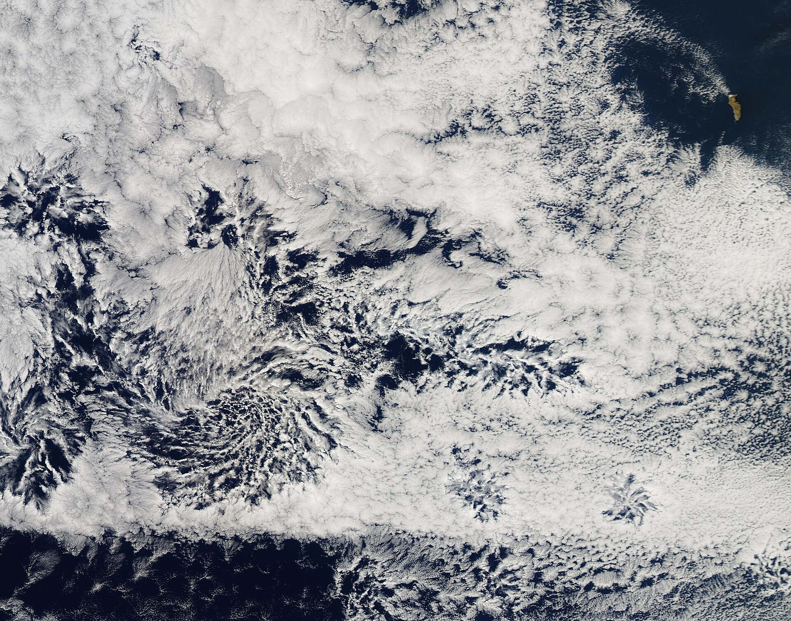
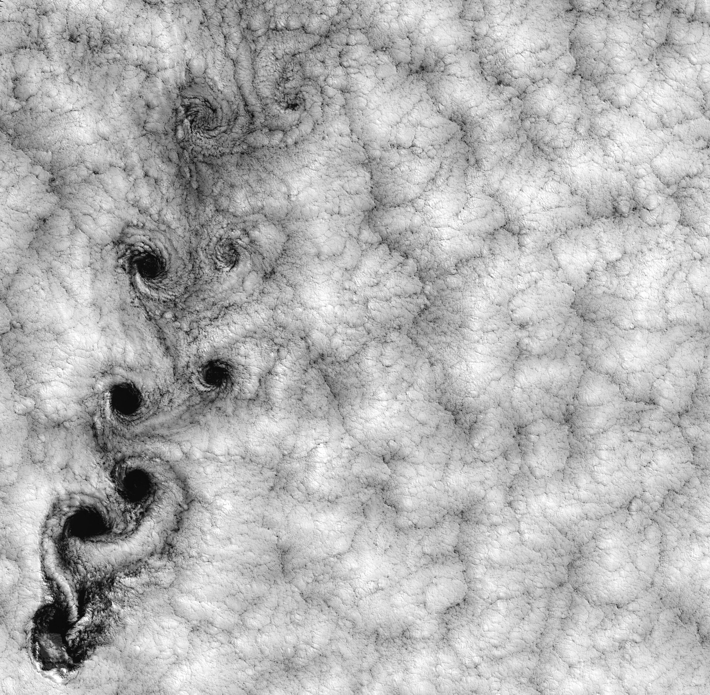
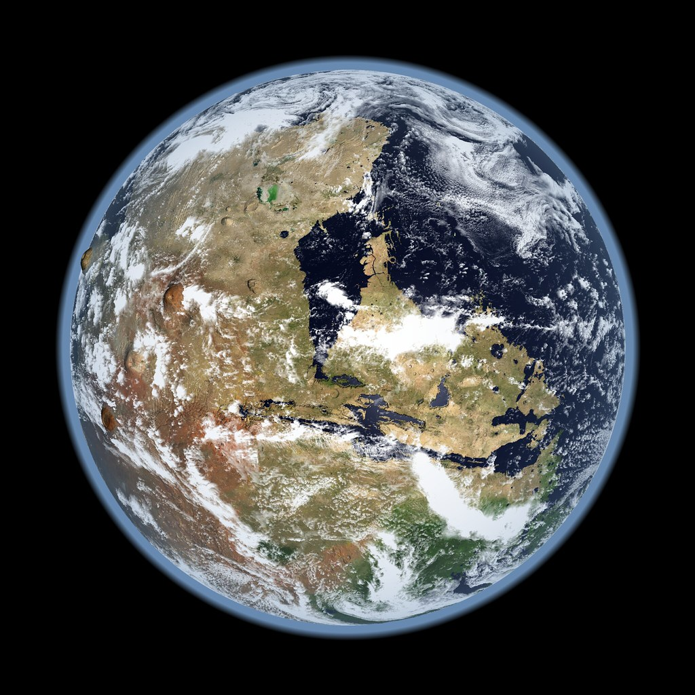

{kind=link}
Zanikanie chmur niskich nad oceanami przyspiesza globalne ocieplenie
Nowe badania wskazują, że chmury niskiego poziomu reagują na wzrost stężenia CO2 w sposób, który dodatkowo podgrzewa klimat naszej planety.
Naukowcy z Caltech oraz Google odkryli, że zanikanie chmur niskiego poziomu nad oceanami stanowi istotny mechanizm wzmacniający globalne ocieplenie. Badania wykazały, że w odpowiedzi na wzrost temperatury powierzchni mórz oraz wyższe stężenia dwutlenku węgla, warstwa tych chmur ulega przerzedzeniu. Proces ten tworzy niebezpieczną pętlę sprzężenia zwrotnego, w której mniejsza ilość odbitego światła słonecznego prowadzi do dalszego wzrostu temperatury planety.

.jpg){kind=link}
Zrozumienie zachowania chmur niskiego poziomu jest kluczowe dla precyzyjnego prognozowania zmian klimatycznych. Chmury te, występujące jako rozległe warstwy nad wodami subtropikalnymi, pełnią rolę naturalnego parasola odbijającego promieniowanie słoneczne. Wyniki badań wskazują, że ich reakcja na wysokie stężenia CO2 jest szybsza i bardziej znacząca, niż zakładały to niektóre wcześniejsze modele klimatyczne. Oznacza to, że wrażliwość klimatu Ziemi na emisje gazów cieplarnianych może być wyższa, niż dotychczas sądzono, co zmienia nasze postrzeganie tempa ocieplenia.

.jpg){kind=link}
Chmury niskiego poziomu, znajdujące się poniżej 6000 stóp nad powierzchnią oceanów, pełnią funkcję ochronną dla planety. Dzięki swojej strukturze skutecznie odbijają światło słoneczne z powrotem w przestrzeń kosmiczną, co znacząco przyczynia się do utrzymywania niższej temperatury powierzchni Ziemi i zapobiega nadmiernemu nagrzewaniu się wód oceanicznych w skali globalnej.

Wzrost temperatury powierzchni mórz bezpośrednio wpływa na redukcję zachmurzenia. Mniejsza ilość chmur oznacza, że do powierzchni oceanu dociera więcej energii słonecznej, co prowadzi do dalszego wzrostu temperatury. Ten mechanizm tworzy samonapędzającą się pętlę sprzężenia zwrotnego, która istotnie wzmacnia proces globalnego ocieplenia, utrudniając stabilizację klimatu w dłuższej perspektywie czasowej.
Najnowsze symulacje przeprowadzone przez zespół z Caltech i Google wykluczają scenariusz, w którym wpływ chmur na klimat byłby zerowy lub łagodzący. Wyniki sugerują, że klimat Ziemi wykazuje dużą wrażliwość na wysokie stężenia CO2, co wymusza rewizję dotychczasowych modeli klimatycznych, które mogły nie doceniać tempa i skali zachodzących zmian w strukturze atmosfery oraz dynamice chmur.
Współczesne modele klimatyczne są zgodne co do faktu, że Ziemia się ociepla, jednak znacząco różnią się w prognozach dotyczących skali długoterminowego wzrostu temperatury. Główną przeszkodą w osiągnięciu konsensusu naukowego była dotychczas trudność w modelowaniu drobnoziarnistej turbulencji atmosferycznej. Nowe dane pozwalają lepiej zrozumieć te procesy, wypełniając lukę w wiedzy, która dotąd uniemożliwiała precyzyjne przewidywanie reakcji chmur na zmiany klimatu.
Dokładna skala długoterminowego wzrostu temperatury wywołanego przez CO2 pozostaje niepewna, ponieważ istniejące modele klimatyczne nadal różnią się w swoich szczegółowych prognozach.
Badania te stanowią istotny wkład w naukę o klimacie, potwierdzając, że chmury niskiego poziomu działają jako wzmacniacz globalnego ocieplenia. Dla decydentów i naukowców oznacza to konieczność uwzględnienia wyższej wrażliwości klimatu na emisje CO2 w przyszłych strategiach ochrony środowiska. Wyniki te eliminują niepewność co do roli chmur, wskazując, że ich zanikanie jest realnym czynnikiem przyspieszającym zmiany temperatury, co wymaga bardziej rygorystycznego podejścia do redukcji gazów cieplarnianych.